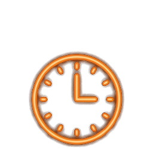
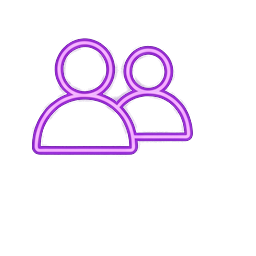
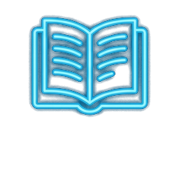

用關係的邏輯取代對錯的邏輯，在安息中重啟愛之連線
今日講堂 · 2026 年 8 月
「你們個人當孝敬父母，也要守我的安息，我是耶和華你們的神。」
在談論「孝敬」之前，我們必須先看見家庭的真實面貌與父母的重擔

在聖經的設計中，地上的父母被賦予了特別的角色：
他們是上帝在家庭中的代表。
當我們尊敬父母，我們實質上是在尊敬那位在背後授權給他們的神。這是一種屬靈的順服與尊崇。
父母在家庭防禦系統中截然不同但完美互補的角色
「提供穩定的安全感與默默的守護」
「使用言語與情感進行高頻率的管教」
當我們面對固執與世代差異時，我們往往會感到挫折，甚至想要切斷連線。這道無形的牆，是我們必須面對並跨越的屬靈考驗。
「安息」的希伯來文原意就是「停下來」。
在凡事追求效率、速度與經濟效益的世代，
我們在線上狂奔，神卻呼喚我們：
「停下來，記得我是神。」
不可否認，許多人在成長過程中，
因為地上父母的不完美、甚至是忽視與不解，
心靈留下了深淺不一的傷口。
地上的愛，往往是有條件的、殘缺的，
讓我們在面對「父親」或「權威」時充滿了防禦。
拖動滑桿，看見天父無條件完全之愛對心靈缺憾的醫治
裂痕、受傷、有條件的愛、防禦的陰影
無條件的愛、永不搖擺、補足缺憾、縫合傷害
當我們願意順服神，在家庭關係中選擇饒恕、接納與停下時間，
神所預備的恩典與祝福，將會遠超我們的想像。
地上的連線會斷網、會離線、會有雜訊。
但在天國裡，我們與天父的連結是永不離線的完美連結。
那裡沒有誤解與障礙，只有完全的愛與理解。
世上的每次操練連線，都是在為永恆作預備。
關係的更新不是口號，而是踏出教會後的日常實踐
在教會大家庭中，透過工具與群組拉近愛的距離

彼此分享、代禱，織成一張堅韌有愛的支持網絡
安息不是一個教條，而是日常生命節奏的刻意對齊

今年父親節最好的禮物，是一份真誠的「注意力」
祝天下所有地上的爸爸們，父親節快樂！阿們！